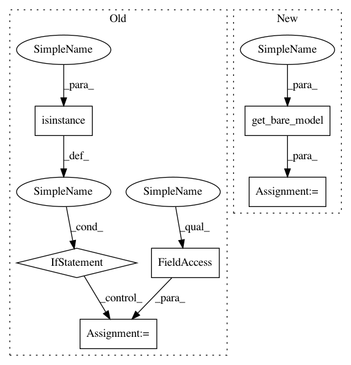

06fb33acf5d138615c8c3153ee5872550d3197ca,basicsr/models/base_model.py,BaseModel,_print_different_keys_loading,#BaseModel#Any#Any#Any#,211
Before Change
load_net (dict): Loaded network.
strict (bool): Whether strictly loaded. Default: True.
if isinstance(crt_net, nn.DataParallel) or isinstance(
crt_net, DistributedDataParallel):
crt_net = crt_net.module
crt_net = crt_net.state_dict()
crt_net_keys = set(crt_net.keys())
load_net_keys = set(load_net.keys())
After Change
load_net (dict): Loaded network.
strict (bool): Whether strictly loaded. Default: True.
crt_net = self.get_bare_model(crt_net)
crt_net = crt_net.state_dict()
crt_net_keys = set(crt_net.keys())
load_net_keys = set(load_net.keys())
In pattern: SUPERPATTERN
Frequency: 3
Non-data size: 6
Instances
Project Name: xinntao/BasicSR
Commit Name: 06fb33acf5d138615c8c3153ee5872550d3197ca
Time: 2020-08-19
Author: wxt1994@126.com
File Name: basicsr/models/base_model.py
Class Name: BaseModel
Method Name: _print_different_keys_loading
Project Name: xinntao/BasicSR
Commit Name: 06fb33acf5d138615c8c3153ee5872550d3197ca
Time: 2020-08-19
Author: wxt1994@126.com
File Name: basicsr/models/base_model.py
Class Name: BaseModel
Method Name: _print_different_keys_loading
Project Name: xinntao/BasicSR
Commit Name: 65b797b419eca78029d954fb405932da3f7a167f
Time: 2020-08-02
Author: wxt1994@126.com
File Name: basicsr/models/base_model.py
Class Name: BaseModel
Method Name: load_network
Project Name: xinntao/BasicSR
Commit Name: 06fb33acf5d138615c8c3153ee5872550d3197ca
Time: 2020-08-19
Author: wxt1994@126.com
File Name: basicsr/models/base_model.py
Class Name: BaseModel
Method Name: save_network